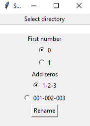

Sortinator
Скачать
Download
2 KB
Sortinator -- это простая программа на Python, которая переименовывает все файлы в папке в их номера от самого старого до самого нового. Можно настроить первое число (0 или 1) и добавление нулей в начало.
Sortinator is a simple Python program that renames all files in a folder to their numbers from oldest to newest. You can customize the first number (0 or 1) and add leading zeros.
